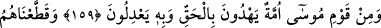
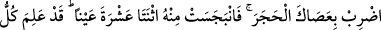
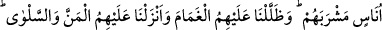
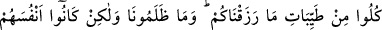
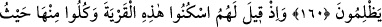
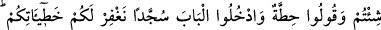
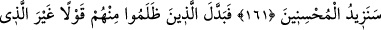
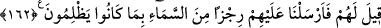

İSRÂİLOĞULLARI’NIN
NANKÖRLÜĞÜ
159. Musa’nın kavminden, hak ile doğru yolu bulan ve onun sayesinde âdil
davranan bir topluluk vardır.
160. Biz İsrailoğullarını oymaklar halinde oniki kabileye ayırdık. Kavmi
kendisinden su isteyince, Musa’ya, “Asânı taşa vur!” diye vahyettik. Derhal ondan
oniki pınar fışkırdı. Her kabile içeceği yeri belledi. Sonra üzerlerine bulutla gölge
yaptık, onlara kudret helvası ve bıldırcın eti indirdik. (Onlara dedik ki) “Size
verdiğimiz rızıkların temizlerinden yeyin.” Ama onlar (emirlerimizi dinlememekle)
bize değil kendilerine zulmediyorlardı.
161. Onlara denildi ki: Şu şehirde (Kudüs’te) yerleşin, ondan (nimetlerinden)
dilediğiniz gibi yeyin, “bağışlanmak istiyoruz” deyin ve kapıdan eğilerek girin ki
hatalarınızı bağışlayalım. İyilik yapanlara ileride ihsanımızı daha da artıracağız.
162. Fakat onlardan zalim olanlar, sözü kendilerine söylenenden başkasıyla
değiştirdiler. Biz de zulmetmelerinden ötürü üzerlerine gökten bir azap gönderdik.
Allah Teâlâ, İsrâiloğulları’ndan buzağıya tapan ve “Ey Mûsâ açıkça Allah’ı
görmedikçe sana inanmayız” diyen bedbahtları zikrettikten sonra onların zıddı olan
hoşbahtlardan da şöyle bahsetmiştir: “Mûsâ’nın kavminden” bunlardan maksad, Mûsâ
(a.s.) zamanında mevcut olan İsrâiloğulları’dır. “hak ile” halka “doğru yolu gösteren
ve” aralarında geçen hususlarla ilgili hükümlerde “onunla” hak ile “âdil davranan bir
topluluk vardır.”